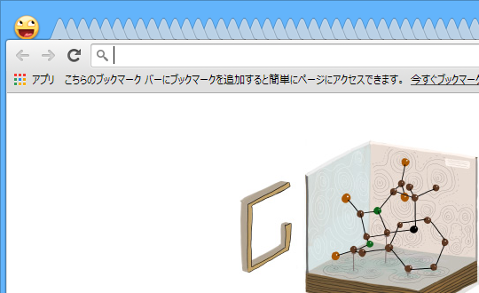

Google Chrome の“ノコギリタブ”をなんとかする
執筆日時：

これな。タブを開きまくって、ノコギリの刃みたいになってしもうておる。もはやページタイトルを確認することすらあたわぬ。どのタブに何が表示されているのかさっぱりわからん。
「重ね表示タブ」機能を有効化する

ここからは自己責任で。まず chrome://flags/#stacked-tab-strip を開く。すると“重ね表示タブ Windows”というフラグがあるはずなので、これを有効化して「Google Chrome」を再起動する。
重ね表示タブ Windows
十分なスペースがない場合、タブは縮小されずに互いの上に重なった状態で表示されます。 #stacked-tab-strip

アクティブなタブとその隣、数タブには最低限の幅が確保され、表示しきれないタブは両端にスタックされる。これで少しは見やすくなった気がする。
けれど、スタックされたタブへアクセスるのはめんどくさくなった。
拡張機能をいれてみる

試しに Chrome Web Store - Tabman Tabs Manager をいれてみた。少しはマシになるかな。
こうしたタブ一覧系の拡張機能は割とたくさんあると思うので、好みのヤツをいれればいいと思う。個人的には
なんかが割りといいなと思った。ほかにもいいものがあったら教えてくりゃれ。